Governance, the Frontier
& Wrap-up
From the trust stack to laws, audits, and open problems
Albert No · Yonsei University
Trustworthy AI · 2026
Contents
Connect the Threads
The trust stack, revisited
One Course, Many Threads
We studied separate failures of AI systems.
- Privacy, memorization, unlearning
- Hallucination, calibration, interpretability
- Adversarial examples, poisoning, jailbreaks
- Provenance, fairness, accountability
They are not separate. They share one structure.
The Trust Stack
Trust is built (or lost) at every layer.
Each course topic lives on one of these arrows.
Thread: What the Data Holds
The same fact, three names.
- Privacy: the model leaks the people inside it
- Memorization: rare records stick verbatim
- Unlearning: can we remove one person later?
One root cause: a model is a lossy copy of its data.
Thread: When the Model Is Wrong
Even with no attacker, outputs fail quietly.
- Hallucination: fluent text, false content
- Calibration: confidence should track truth
- Interpretability: can we see why it answered?
Reliability is trust in the output itself.
Thread: The Adversary
An attacker can strike at any layer.
- Poisoning: corrupt the training data
- Adversarial examples: fool the trained model
- Jailbreaks: bypass the output guardrails
Same intent, three points of entry.
Thread: Who Answers for It
When a system causes harm, who is responsible?
- Provenance: where did this content come from?
- Fairness: who bears the errors?
- Accountability: who must explain and fix it?
Trust is not a model property. It is a social one.
The Pattern
Every threat is a broken promise at one layer of the trust stack.
Govern the stack, not just the model.
From Threats to Governance
Technical fixes are necessary, not sufficient.
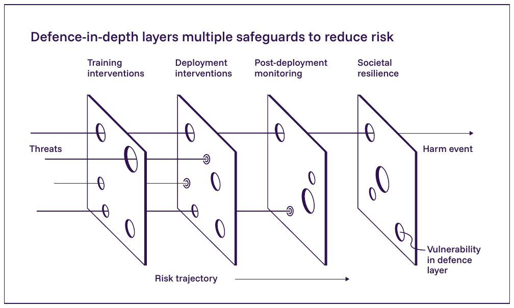
- Differential privacy bounds one leak
- Robust training resists one attack
- No single method covers the whole stack
Governance is how we manage what no method fully solves.
What Governance Means
Rules, roles, and checks around a system.
Frameworks
How to reason about risk.
Regulation
What the law requires.
Auditing
How we verify claims.
Foundation Models Raise the Stakes
One model, trained once, reused everywhere.
- A single flaw spreads to every application
- Capabilities and risks are hard to predict
- Few actors, broad societal reach
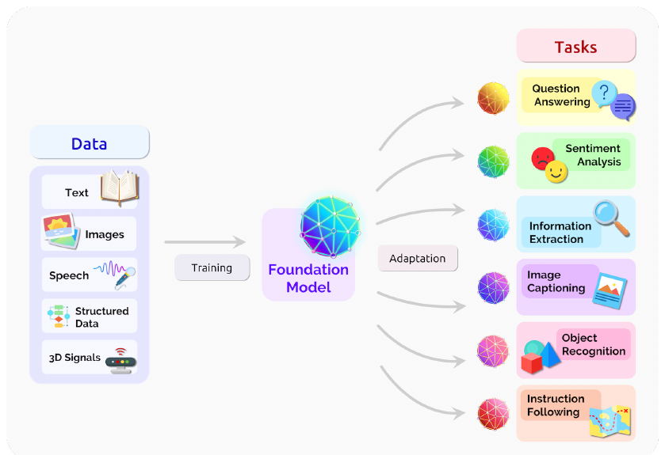
Risk Frameworks
Map, measure, manage
Why a Framework
"Be responsible" is not actionable.
- Teams need a shared vocabulary for risk
- And a repeatable process, not good intentions
A framework turns values into steps.
The NIST AI RMF
The AI Risk Management Framework, a US voluntary standard.
What it is
A common process for identifying, assessing, and reducing AI risk across a system's life cycle.
NIST = US National Institute of Standards and Technology.
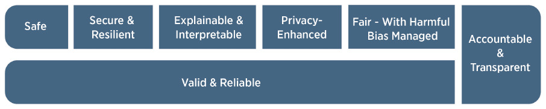
Map, Measure, Manage
The RMF runs four functions, continuously.
Map
Understand the context before building.
- Who is affected, and how?
- What could go wrong, and for whom?
- What is the system actually for?
You cannot manage a risk you never named.
Measure
Turn the mapped risks into numbers.
- Accuracy gaps across groups
- Leakage rates, attack success rates
- Robustness under stress tests
A metric is a promise you can check.
Manage
Act on the measurements, then repeat.
- Prioritize the highest risks first
- Mitigate, accept, or decline to deploy
- Monitor after release, not only before
Risk management is a loop, not a checkbox.
The Generative AI Profile
A 2024 companion to the RMF, written for generative AI.
- Names 12 risks GenAI raises or makes worse
- Includes confabulation: NIST's word for hallucination
- Maps each risk to concrete actions in the four functions
Frameworks Are Not Enough
A voluntary framework has no teeth.
It guides the willing. Law binds everyone else.
So governments are writing rules.
Regulation
The EU, the US, Korea, and the world
A Taxonomy of Risks
Before rules, you need a map of harms. Four of one paper's six risk areas:
Discrimination
Unfair, biased, or exclusionary outputs.
Information hazards
Leaking private or dangerous knowledge.
Misinformation
Confident, false, or misleading content.
Malicious use
Fraud, influence, cyber-attacks at scale.
The Full Map: Six Areas
The paper's six risk areas, each with a mechanism and types of harm.
Mechanism first: data, model, user, or deployment?
Risk-Based Regulation
Match the rules to the stakes.
- A spam filter is not a hiring tool
- A hiring tool is not a medical device
- Heavier risk earns heavier duties
This is the core idea behind the EU's approach.
EU AI Act: Risk Tiers
Four levels, from banned to unregulated.
The Commission's Own Picture
How the EU draws its four tiers: fewer systems higher up, heavier rules.
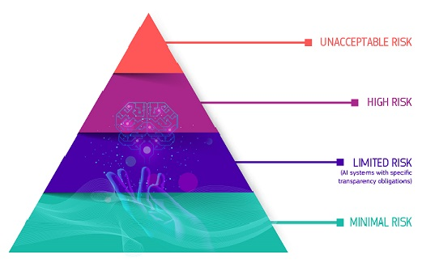
Limited risk is defined by transparency duties alone.
Unacceptable Risk: Banned
Some uses are prohibited outright.
- Social scoring, by public or private actors
- Manipulative systems that exploit the vulnerable
- Most untargeted face-scraping for surveillance
No amount of paperwork makes these legal.
High Risk: Strict Duties
Allowed, but with heavy obligations.
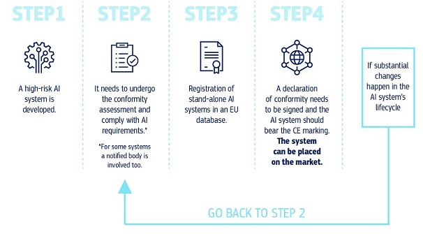
- Hiring, credit, medical, critical infrastructure
- Risk assessments and quality data
- Human oversight, logging, transparency
Limited and Minimal Risk
Limited
Transparency only: tell users they face a machine, or that content is AI-made.
Minimal
Most everyday tools. No special rules at all.
The vast majority of systems land here.
EU AI Act: The Timeline
In force since 2024, but duties phase in over years.
A 2026 amendment (the Digital Omnibus) pushed high-risk duties to Dec 2027 and Aug 2028.
Rules for General-Purpose AI
Foundation models get their own duties, live since Aug 2025.
- Technical documentation and a training-data summary
- A policy to respect EU copyright law
- Above 1025 FLOP of training compute: "systemic risk", extra safety duties
A voluntary Code of Practice (2025) is the compliance path most major labs signed.
The US Approach
Still no single AI law: a patchwork.
- Executive orders steer federal agencies
- Sector regulators stretch existing law
- States add their own rules: hiring audits, state AI acts
The first binding US AI rules came from states, not Congress.
US: Whiplash at the Top
Federal direction reversed within fifteen months.
As of mid-2026: no federal AI statute, and state laws still bind.
Korea: The AI Basic Act
The first comprehensive national AI law after the EU's.
- Passed Dec 2024, in force since Jan 2026
- Regulates "high-impact AI": health, energy, hiring, biometrics
- Enforced by the Ministry of Science and ICT (MSIT)
This is the law AI systems in Korea now work under.
AI Basic Act: What It Requires
Duties echo the EU, with lighter penalties.
- Label generative-AI content users could mistake for real
- Extra safety duties above 1026 FLOP of training compute
- Large foreign providers need a domestic representative
Fines are modest (up to 30M KRW), with a one-year grace period.
Regulating the Frontier
The largest models may need their own regime.
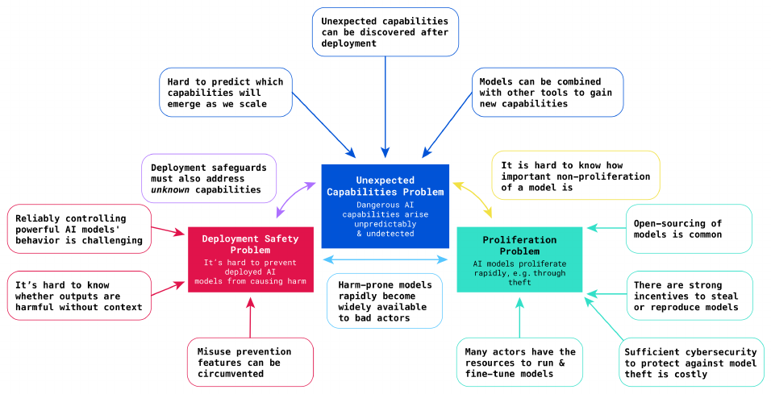
- Pre-deployment safety evaluations
- Registration of very large training runs
- Duties scaled to capability, not just use
Where Rules Can Attach
The frontier AI lifecycle: inputs, development, broad deployment, downstream use.
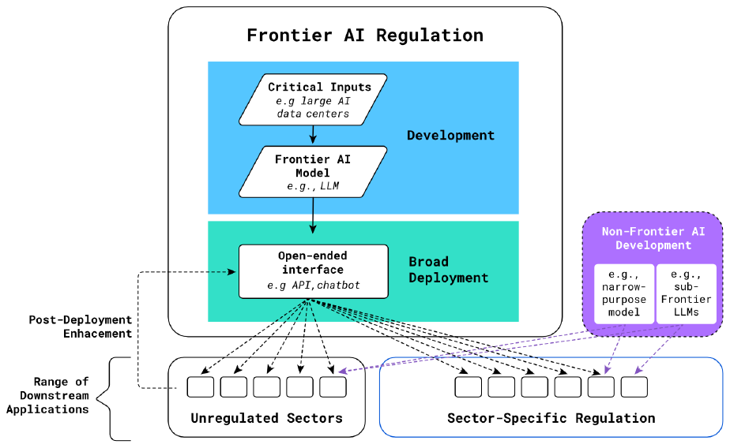
Sector rules reach the applications; the model itself needs its own hook.
Regulation Is Global
A model trains in one country, ships everywhere.
- The strictest market often sets the bar
- Standards diverge across regions
- Compliance becomes a design constraint
You cannot opt out of jurisdiction by going online.
Summits and Safety Institutes
Governments now coordinate on frontier risk.
National AI safety and security institutes (UK, US, Korea, more) now test frontier models.
The International AI Safety Report
A shared scientific baseline for policymakers.
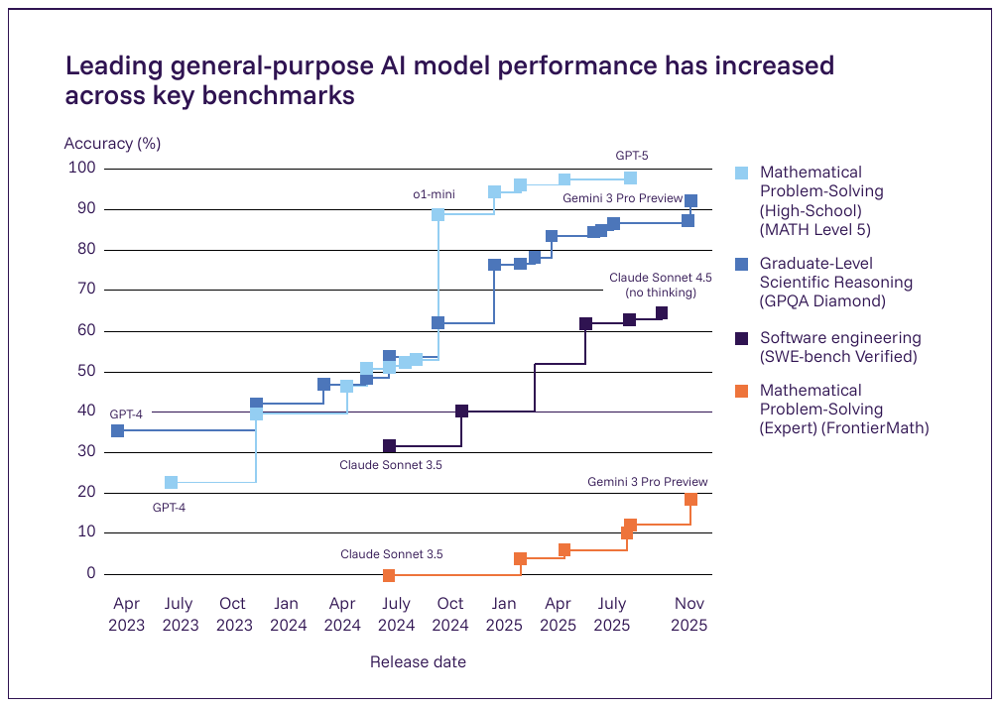
- Chaired by Yoshua Bengio, written by 100+ experts
- Backed by around 30 countries and international bodies
- 2026 edition: capabilities are outpacing governance
Why Governance Is Hard
The report's four categories of challenge for managing general-purpose AI risk.
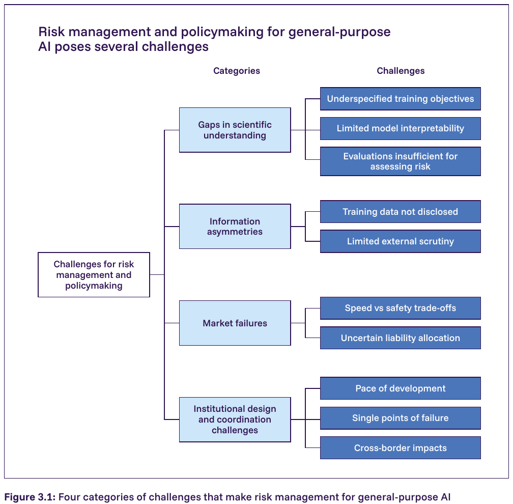
- Science gaps: objectives, interpretability, evals
- Asymmetries: undisclosed data, little scrutiny
- Market: speed over safety, unclear liability
- Institutions: pace, single points, borders
Auditing & Red-Teaming
How we check before we trust
Trust, but Verify
A vendor's claim is not evidence.
- "Our model is safe" is a marketing line
- An audit turns that claim into a test
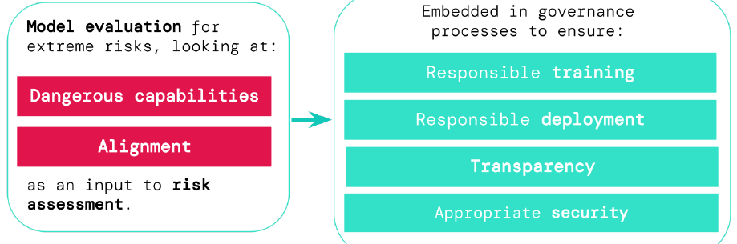
Verification is the heart of accountability.
Red-Teaming
Hire people to break your own model.
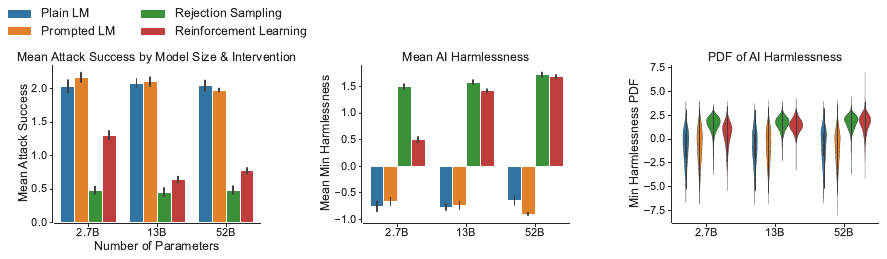
- Craft jailbreaks and harmful prompts
- Probe for leaks, bias, and misuse
- Find the failure before an attacker does
Borrowed from security: attack to defend.
The Audit Loop
Red-teaming and auditing form a cycle.
Break, measure, disclose, repair, repeat.
Dangerous-Capability Evals
Test for the worst things a model could do.
- Aid in cyber-attacks or bioweapon design
- Deceive, scheme, or evade oversight
- Measured before release, by independent teams
Frontier Safety Frameworks
The big labs publish if-then commitments.
Voluntary and self-enforced, but public: outsiders can check the promise.
Anthropic: AI Safety Levels
The Responsible Scaling Policy defines ASL tiers, modeled on biosafety levels.
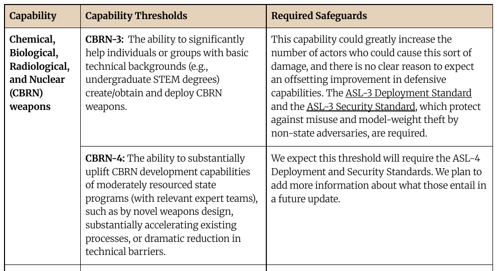
- Higher ASL: stronger security and deployment safeguards
- ASL-3 first activated in 2025 (Claude Opus 4), as a precaution
- Added weight-theft defenses and classifiers against bioweapon misuse
OpenAI: Preparedness Framework
Tracks a short list of frontier risk categories.
- Biological and chemical, cybersecurity, AI self-improvement
- High capability: safeguards before deployment
- Critical capability: safeguards during development itself
DeepMind: Frontier Safety Framework
Built around Critical Capability Levels (CCLs).
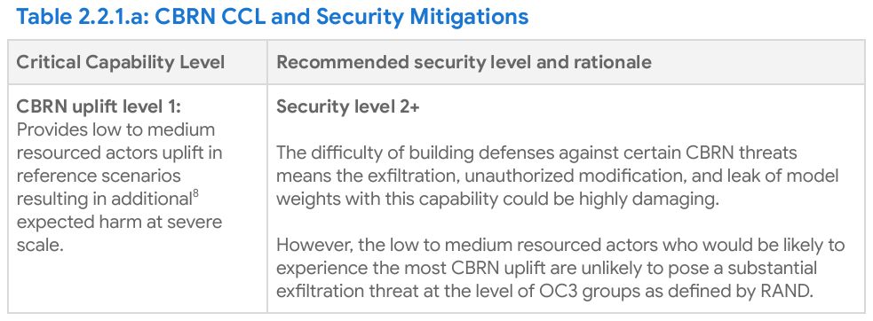
- A CCL: capability enabling severe harm without safeguards
- Reaching one triggers security and deployment reviews
- 2025 update added harmful manipulation and misalignment risks
External Audits
The builder should not be the only judge.
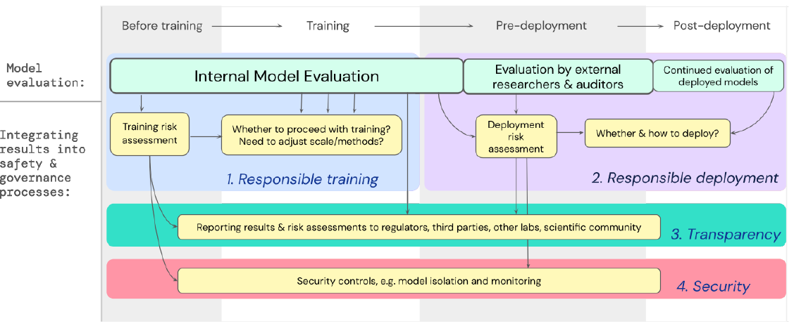
- Independent labs test the same claims
- Regulators may demand access
- Conflicts of interest get checked
Like financial audits: outside eyes, on the record.
Model and System Cards
A short, public fact sheet for a model.
What goes inside
Intended use, training data summary, evaluation results, known limits, and tested failure modes.
A nutrition label for an AI system.
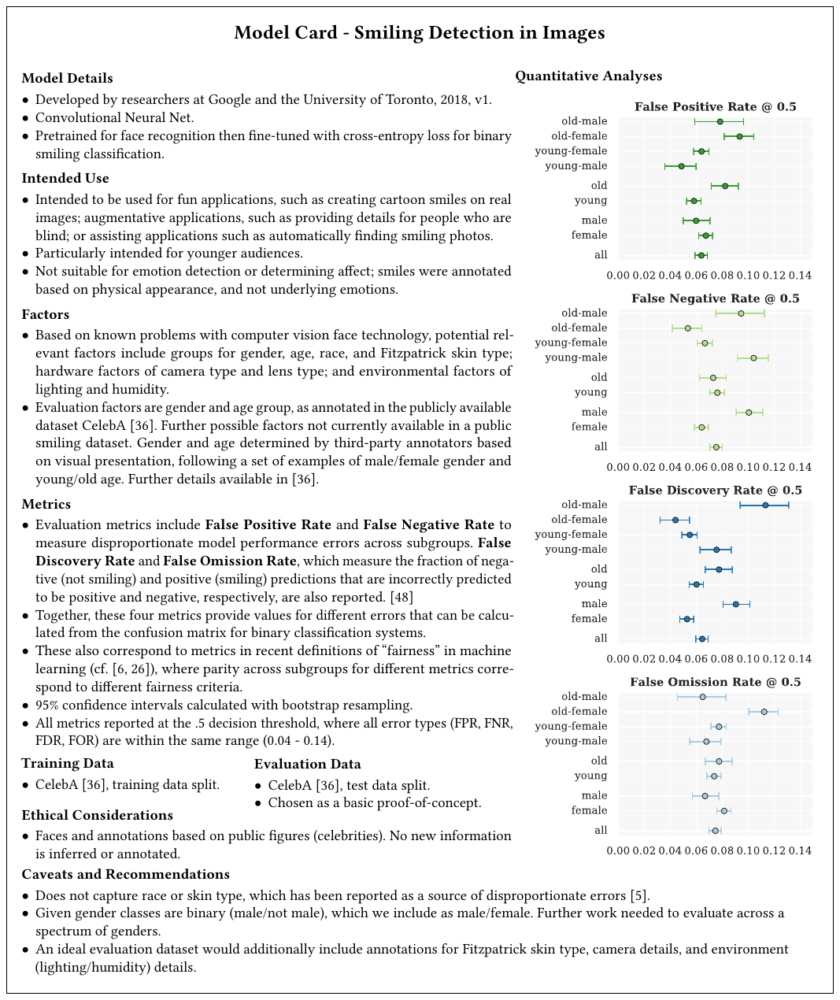
Why Documentation Matters
A claim on paper can be held to account.
- Users learn the real limits up front
- Regulators get a record to check
- Vendors cannot quietly change the story
Transparency is the cheapest governance tool.
Auditing Has Limits
An audit shows presence, not absence, of flaws.
Passing a test means we did not find the failure, not that none exists.
Black-box access makes deep audits hard.
Open Problems for 2026+
What is still unsolved
The Frontier Moves Fast
Each fix exposes the next hard problem.
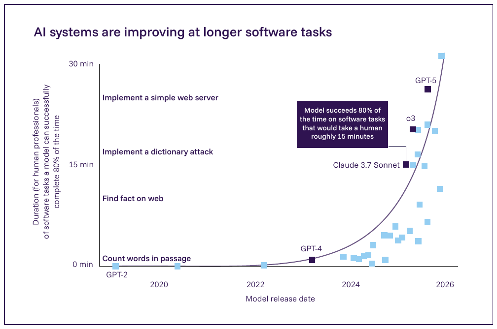
- Capabilities outpace our evaluations
- Deployments outpace our rules
- Systems compose in unplanned ways
Four problems will define the next few years.
Meaningful Privacy at Web Scale
What does a privacy budget mean for the whole internet?
- Whose privacy is the guarantee protecting?
- What counts as one person's data here?
- Strong guarantees still fight utility
A clean definition at pretraining scale is open.
Robust Unlearning
The law says delete me. Can a model comply?
- Remove one person without full retraining
- Prove the data is actually gone
- Resist re-extraction after deletion
Verified deletion at scale is unsolved.
Agentic Safety
Models now take actions, not just answer.
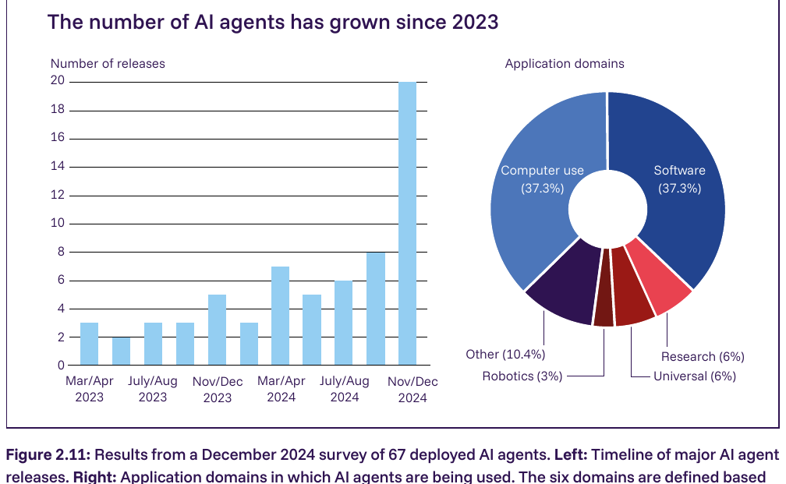
- They call tools, browse, write and run code
- A jailbreak becomes a real-world action
- Errors compound across multiple steps
Safety must cover behavior, not only text.
Provenance and Fairness Together
Each goal is hard alone, and they interact.
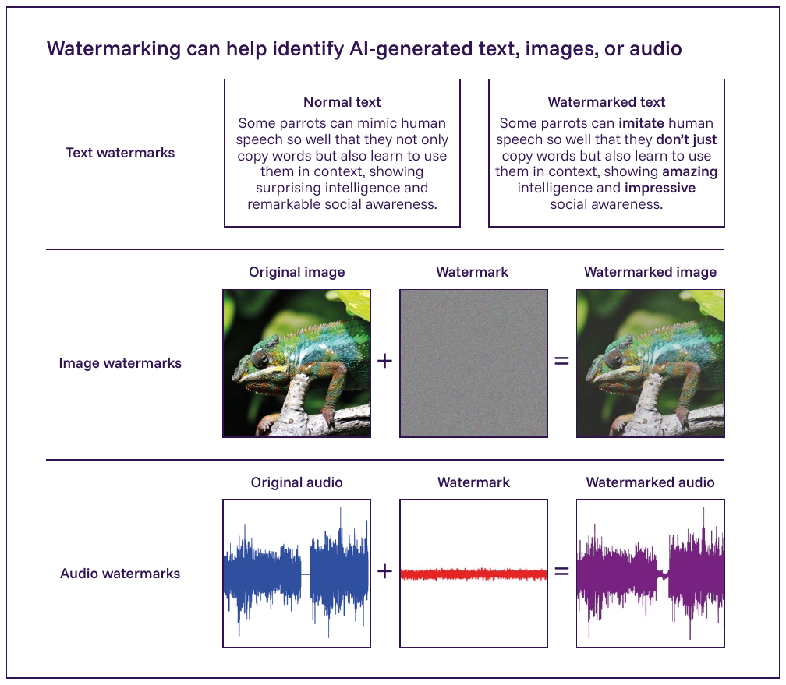
- Watermarks must survive editing and removal
- Fairness fixes can shift harm, not erase it
- Optimizing one can quietly hurt another
We lack tools that hold both at once.
Tensions Are Permanent
Privacy, utility, fairness, and openness pull against each other.
Governance manages the trade-off. It does not erase it.
Wrap-Up
How to read an AI headline
Reading an AI Headline
The skill this course gives you: ask the right question.
- "Passes the bar exam": on what test, with what help?
- "Model is unbiased": measured how, for whom?
- "Privacy preserving": under what guarantee?
A claim without a metric is a slogan.
Five Questions to Ask
- What data trained it, and whose?
- How was the claim measured?
- Who is harmed when it is wrong?
- Who audited it, independently?
- Who is accountable for the harm?
These five cut through almost any AI headline.
Demo Showcase
Demo
- A membership-inference attack on a small model
- A privacy budget vs accuracy slider
- A one-line jailbreak against a guardrail
- A bias audit across demographic groups
Run them yourself: a claim you test is a claim you understand.
The One Lesson
Trust is earned at every layer of the stack, and verified, never assumed.
Data, model, output, society: govern all four.
Key Takeaways
- Every threat is one broken promise in the trust stack
- Frameworks map, measure, and manage risk
- Regulation scales duties to the stakes: EU, US, Korea
- Frontier labs bind themselves with if-then commitments
- Audits verify; documentation holds to account
Open problems remain: privacy, unlearning, agents, fairness.
Ask the metric behind every claim.